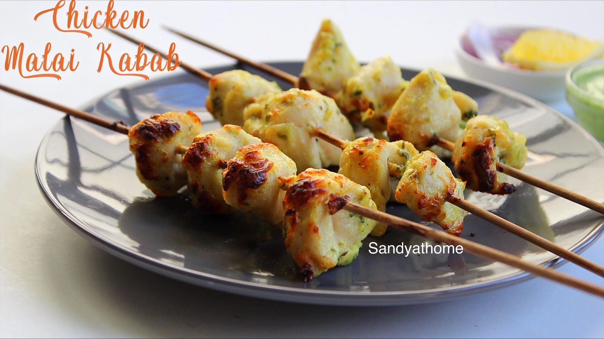

Chicken Malai Kebab
How to make Chicken Malai Kebab
There are days, when you just crave for something delicious yet exquisite and Chicken Malai Kebab is perfect for such indulgences. Chicken Malai Kebab is also known as Reshmi Kebab.
Ingredients
- 300 gm chicken boneless
- 1/2 cup fresh cream
- 1 tablespoon garlic paste
- 1 teaspoon black pepper
- 2 1/2 tablespoon lemon juice
- 1 tablespoon ginger paste
- 7 almonds
- 1 handful coriander leaves
Recipe instructions (taken from the book)
- To make this easy recipe, begin with washing the chicken pieces. Drain the excess water and pat dry. Soak the almonds overnight or for a few hours.
- Next, take a blender and add in curd, fresh cream, lemon juice, black pepper, ginger and garlic paste, soaked almonds, cashews and salt to taste.
- Make a smooth lump free paste and marinate the chicken pieces nicely. Allow the marinated chicken to refrigerate for a few hours.
- Once the chicken is nicely marinated, heat an oven at 280 degree Celsius.
- In the meantime, put the kebabs into the greased skewers and grill the kebabs for 20 minutes in the oven.
- After sometime , flip side and slow cook for another 5-10minutes for a slightly charred texture.
- Turn off the oven place the kebabs on plate and garnish with a handful of coriander leaves and any chutney of your choice.